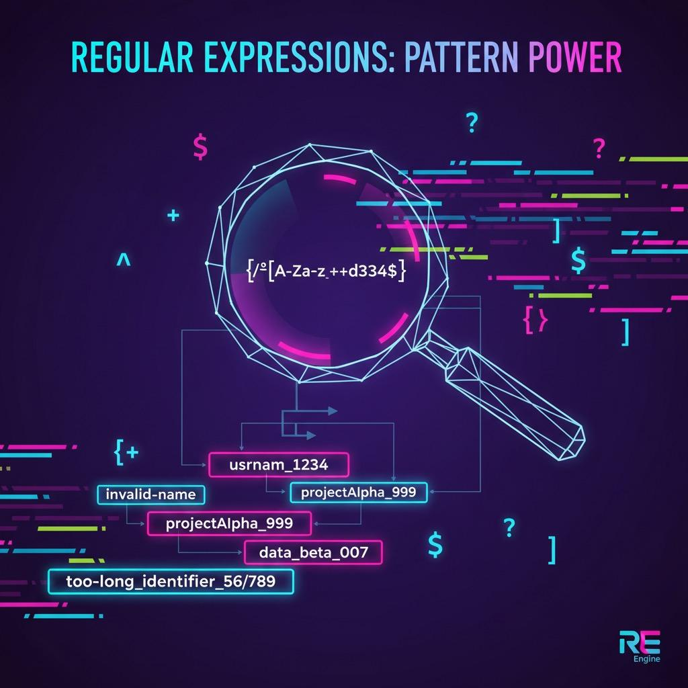
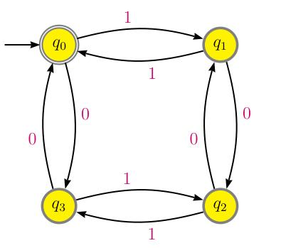
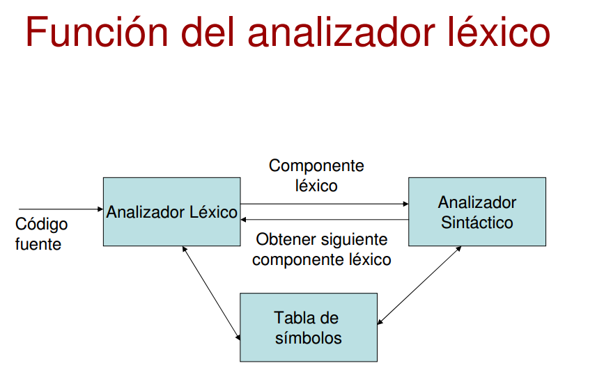
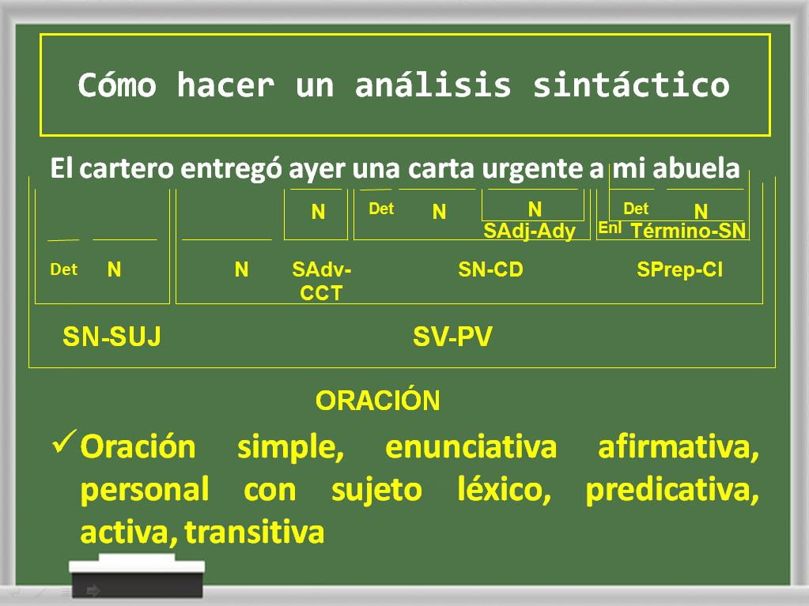
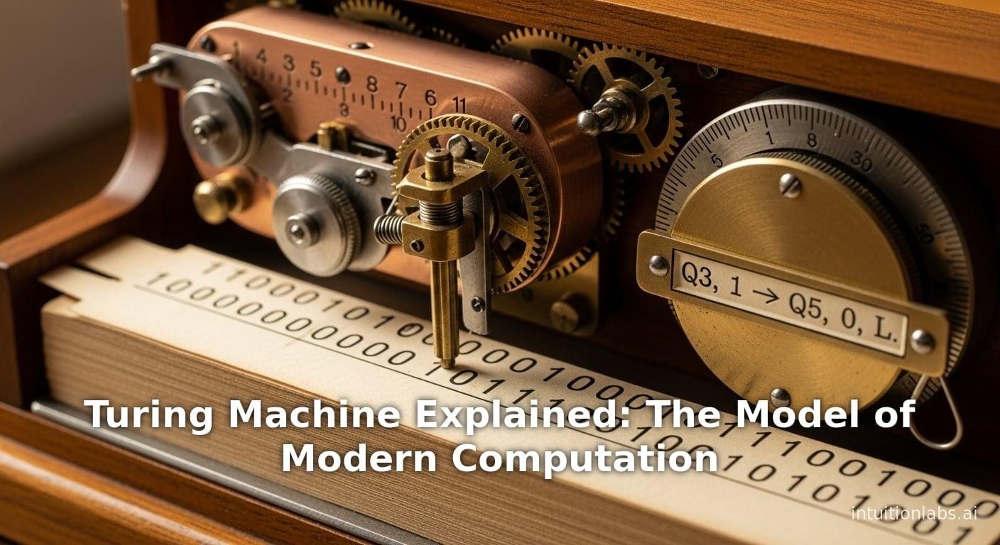

LA
Lenguajes y Autómatas I
Lenguajes y Autómatas I
Teoría, ejemplos, diagramas, ejercicios y recursos para el aprendizaje de la asignatura.
Explorar TemarioLenguajes y Autómatas I
Francisco Flores Álvarez
Ingrid López Valle
Daniela Martínez Recillas
Daniela Flores Valle
Ingeniería en Sistemas Computacionales
Tecnológico de Estudios Superiores de Huixquilucan
Desarrollar una página interactiva que facilite el aprendizaje de los conceptos fundamentales de Lenguajes y Autómatas I.
La asignatura Lenguajes y Autómatas I permite comprender cómo las computadoras reconocen instrucciones, validan información y procesan lenguajes. Sus conceptos son fundamentales para el diseño de compiladores, el análisis léxico, las expresiones regulares, la inteligencia artificial y el desarrollo de software.
Ayuda a entender cómo un programa escrito por una persona se transforma en instrucciones que una computadora puede ejecutar.
Permite usar expresiones regulares para validar correos, teléfonos, contraseñas, CURP, RFC y otros formatos.
Los autómatas permiten representar procesos, reconocer patrones y modelar sistemas computacionales.
Los lenguajes formales se relacionan con el procesamiento de lenguaje, la lógica computacional y los modelos matemáticos.
Unidades
Temas y subtemas
Recursos interactivos
Glosario académico
Alfabeto, cadenas, lenguajes, traductores y fases del compilador.
Ver unidad →
Definición formal, diseño de expresiones regulares y aplicaciones reales.
Ver unidad →
AFD, AFND, conversión, representación y minimización de estados.
Ver unidad →
Tokens, lexemas, patrones, errores léxicos y aplicaciones.
Ver unidad →
Gramáticas, árboles de derivación, formas normales de Chomsky, FIRST y FOLLOW.
Ver unidad →
Definición formal, construcción modular y lenguajes aceptados.
Ver unidad →Consulta los conceptos fundamentales de Lenguajes y Autómatas I: alfabeto, cadena, lenguaje, expresión regular, autómata finito, token, lexema, gramática, FIRST, FOLLOW y Máquina de Turing.
Abrir GlosarioPon a prueba tus conocimientos sobre Lenguajes y Autómatas I mediante un cuestionario interactivo de 10 preguntas.
Iniciar Quiz